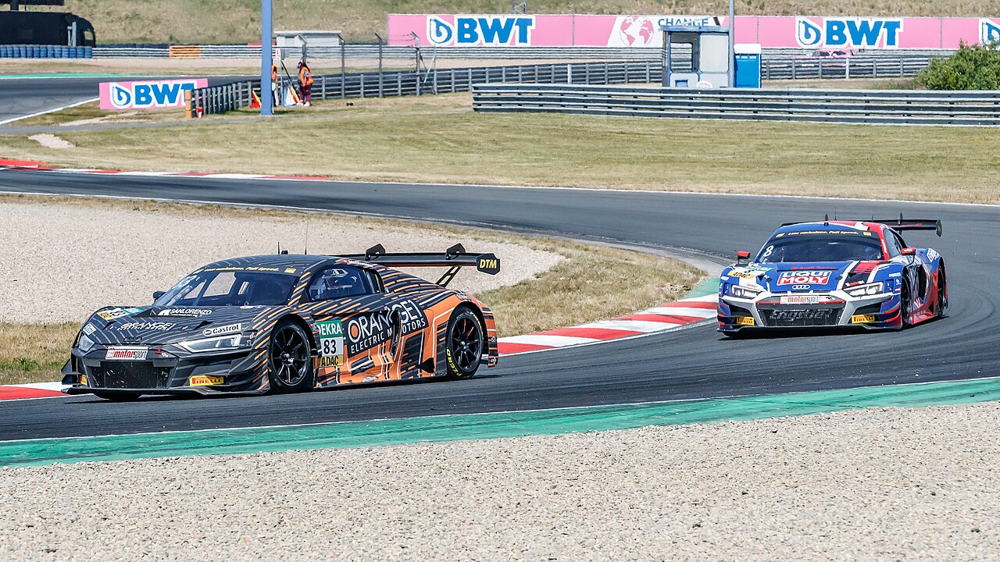

ภาพรวม
Touring Carคืออะไร?

Touring Car Racing ใช้รถยนต์ที่มีพื้นฐานจากรถ 4 ประตูหรือ Hatchback ที่ขายในตลาด ปรับแต่งตามกฎ ทำให้ผู้ชมเชื่อมโยงกับรถที่ตัวเองขับได้
ลักษณะเด่นคือการแข่งที่ ประชิดตัวมาก เนื่องจากรถมีสมรรถนะใกล้เคียงกัน เส้นเบรกเหมือนกัน หน้าต่อหน้า ทำให้ Touring Car มีการปะทะและแซงที่ตื่นเต้นที่สุด
ใน TCR Regulations รถที่หลากหลาย เช่น Honda Civic, Hyundai Elantra, Cupra Leon และ Audi RS3 สามารถแข่งร่วมกันได้อย่างเท่าเทียม ด้วยระบบ Balance of Performance
